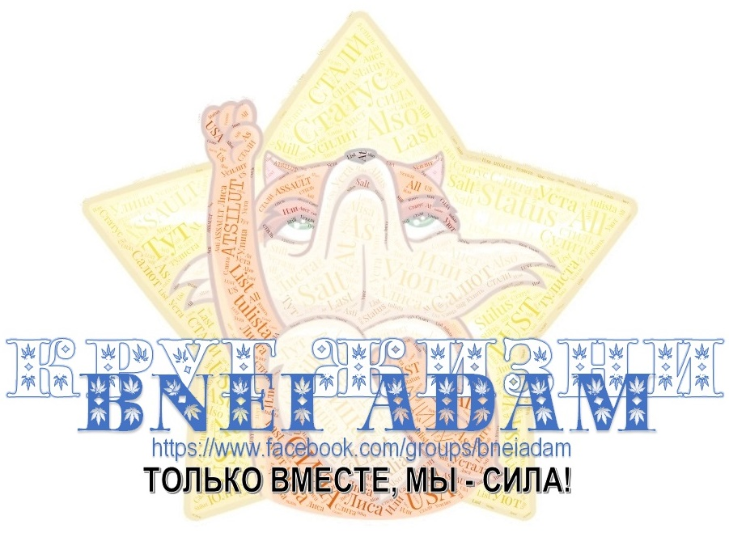

Интересный эпизод. Сейчас попробую рассказать.
Продаются в универсаме два типа черного хлебушка. Типа обычного такого "каравая". И, главное что, один, типа "дрожжевой", а один "бездрожжевой" : )). И они, вообще, одинаковы. На вид, и на вкус, по моему, они тоже, одинаковые (покупал второй когда-то, по-моему, разницы никакой не заметил). Но "бездрожжевой" стоит в два раза дороже. Я не знаю, кто эту фигню придумал, но кто-то с большими мозгами, я так думаю. Потому что очевидно, что сырье одно и то же (хлебцы там же за стенкой и изготавливаются).
И, вот, лежит один хлеб. На всю полку оставшийся : )). Тот, который "бездрожжевой", в два раза дороже. И я типа, подхожу, его смотрю-смотрю, отхожу и смотрю что-то другое. И, вот, смотрю, парень там высовывается. Типа, парень, может быть он новый там работает, может не новый, я не знаю. И вот, я ухожу куда-то туда, за другими вещами. А потом возвращаюсь, и смотрю, что там (на полке) уже два хлебца лежит : )). Два лежит, и вот, я смотрю, что там один лежит "нормальный". По "нормальной" цене.
Я его беру, и иду дальше. Это этот парень увидел, что я хочу этот хлеб купить, что его там нету, что мне не нужен тот, который дороже, и вот, положил туда один ("нормальный")... Они видимо, ждут, пока найдется дурак, который возьмет и купит тот, который остался дороже. Кому он нужен? Ну, кому-то нужен, раз там масса народа проходит, то, рано или поздно, они его "сметут". Тогда можно будет туда положить уже новые, которые испекли только что, да? А пока их лучше "придержать".
Ну, вот такая вот "бизнес-стратегия". Но я домой пришел, поделал то и это. И я помолился за этого парня, я попросил Господа, чтобы Он ему открыл Свое благословение, Свою "награду" за (совершенное парнем) доброе действие, потому что он его совершил, и он его совершил абсолютно без ожиданий. Потому что ему от него (от этого действия) ничего "хорошего" совершенно точно не было. Ни денег я ему не дал, ни видеть я его не видел, этого парня даже. Так, мельком. Как и он меня. А если его увидит еще какая-нибудь там тетка "управляющая", так ему еще и "нагоняй" дадут за это, за то, что он там, блин, типа, волю нарушает "барскую".
Ну вот. А именно такие действия Творец, Свят Благословен Он, Он и "вознаграждает". Потому что, понимаешь, все очень просто: Творец вознаграждает действия без ожиданий. То есть, действия, в которых нету ожидания никакой выгоды для себя. Абсолютно. Вот ты делаешь это действие, и идешь дальше. А потом, ты "ловишь" просто "сверху" то, что тебе "посылается". Посылается "в награду", потому что ты выбрал правильный Путь. И этот Путь перед тобой открывает все новые и новые горизонты.
Я благодарю Тебя, Господь, за то, что Ты позволяешь удостаиваться включаться, Господь, в Пути, в Пути развития Твоего творения. В Пути, в Пути, Господь, раскрытия Твоего благословения и благоволения, Господь, на этом Пути. Путем, Господь, осознанного выбора каждым человеком Твоего Пути, как "Пути Сердца". Не как пути, который, так сказать, "шкурку" его греет, а тот Путь, к Которому действительно лежит Сердце. И, когда человек выбирает этот Путь, он раскрывает, что в этом есть Твоя Воля. И то, что Ты, Господь, благословляешь тех, кто идет этим Путем. Благословляешь их после действия. Ни перед действием, ни в процессе действия, а после действия. Абсолютно исключающего какие-либо ожидания - ожидания что-либо получить от этого действия вообще. Но, направленного на то, чтобы сделать хорошо другому.
Сделаем и услышим!